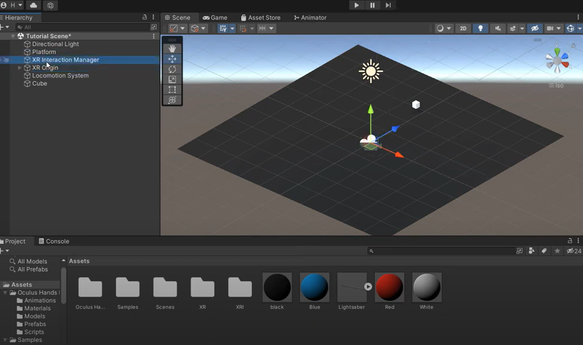
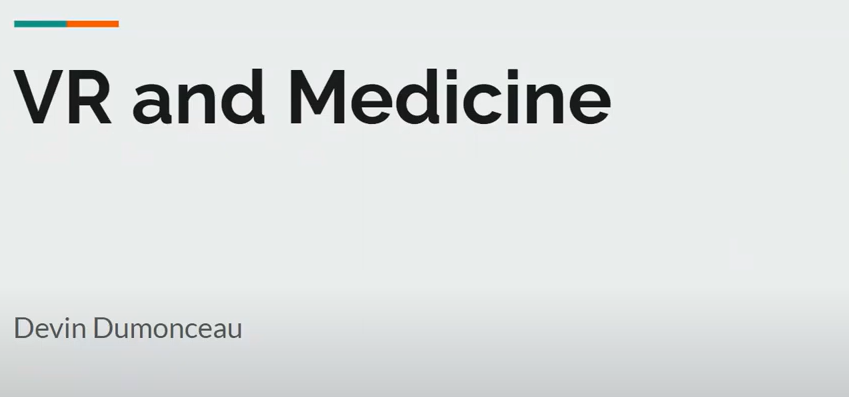
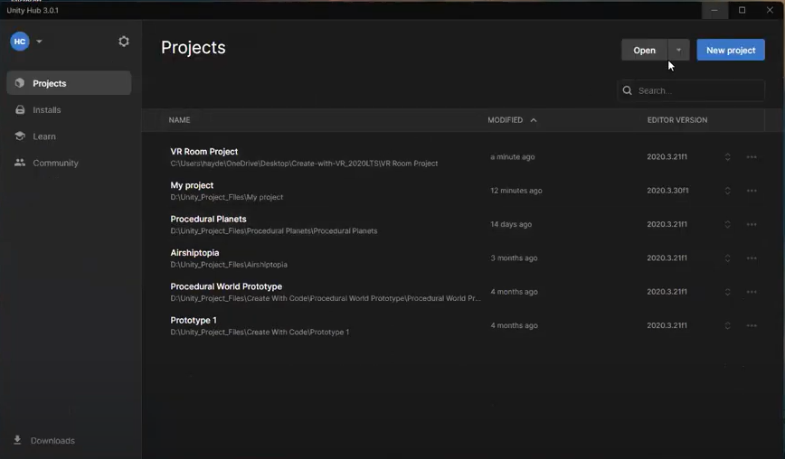
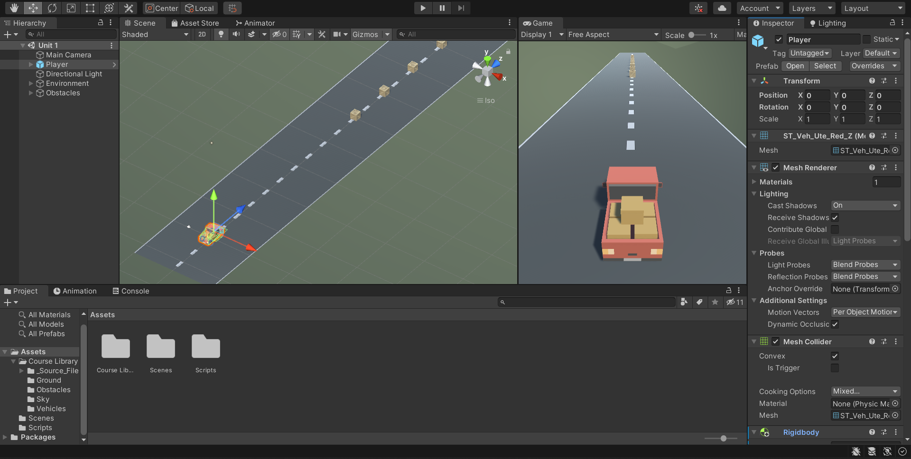

Club for Augmented and Virtual Reality at CSU (CSU ARVR) is a club studying and experimenting on how Augmented Reality (AR) and Virtual Reality (VR) will affect many fields students at CSU are pursuing. Our club also aims to foster an environment where people can learn to develop both AR and VR using Unity. Currently, we are presenting information related to AR and VR and hosting workshops on Unity development weekly.
Anyone with an interest in AR and VR is encouraged to join and learn about this upcoming technology!
Recent Events
-

Basic VR Implementation
In today's event, we did not talk about any recent event, rather, Huy started the workshop directly. He introduced how to implement basic VR interaction using XR Interaction Toolkit.
-

Introduction to VR Implementation
In today's event, Devin went through recent event on VR and medicine, focusing on how to use VR technologies to create safer space between doctors and patients. VR technologies also enable doctors' ability to operate on patients utilizing special tools regardless the distance between them.
In today's workshop, Huy introduced how to use XR Interaction Toolkit to create VR environment, including the integration of Oculus Quest 2 controllers in Unity.
-

Introduction to VR Implementation
In today's event, Lu went through recent event on AR technologies, focusing on the the application of usage of AR in the real life, including gaming, product visualization, education, and so on.
In today's workshop, Hayden introduced how to create and set up a new VR project in Unity, including exploring the starter scene, adding background, and so on.
- More
Resources
-

Unity Starter Project
This is the Unity introduction for the CSU AR/VR Club. The purpose of this is to familarize you with Unity, the currently prefered VR/AR platform with native support for multiple headsets. Over the course of these you will become able to install Unity, add assets, manipulate enviroments, and - should you chosse to - script using C#.
- More